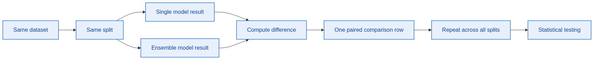
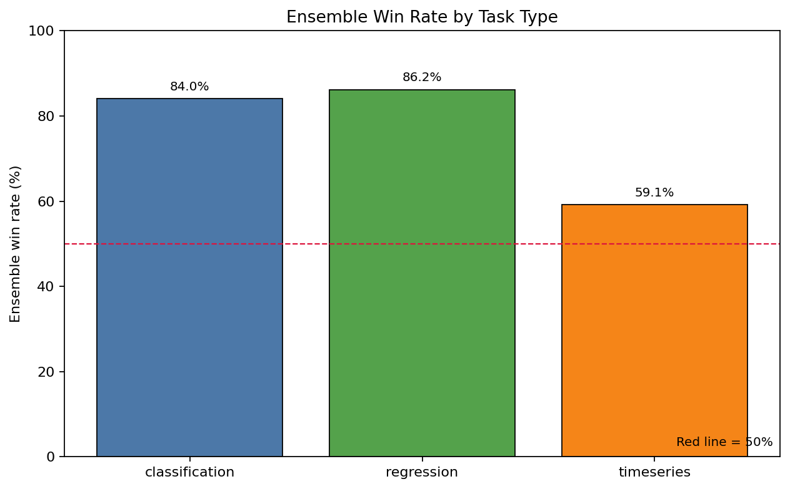
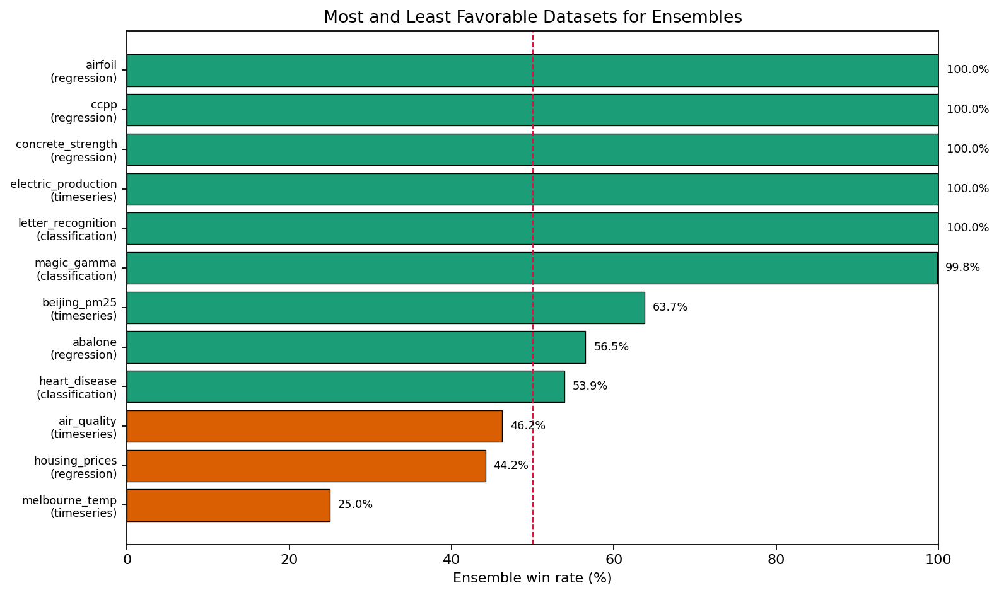
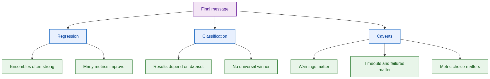

Does the result change by dataset?
TPSM Project
Ensemble Models vs Single Models
A browser-native presentation prototype focused on readable evidence, sharp pacing, and final-deck polish.
Classification
Regression
Paired Evidence
Problem Statement
Do ensembles consistently beat single models?
Does the result change by metric?
Can the conclusion survive warnings and failed runs?
Evidence Pipeline
Keep comparison fair before judging model quality.
Same split
Compare models on matched dataset splits so score differences are paired, not accidental.
Same metric
Evaluate every model pair under the same task-specific metric definition.
Same dataset
Aggregate after preserving dataset-level effects, warnings, and edge cases.

Descriptive Analysis
Task-level results are useful, but not enough.
Overall win rate gives a fast read. Final claim still needs metric and dataset breakdowns.
Design note
Charts should support one message per slide, not carry every conclusion alone.

Dataset Effects
Dataset extremes explain why the final claim must stay conditional.
Some datasets reward ensembles strongly. Others reduce or reverse the advantage.
Best usequalify conclusion
Riskover-generalizing

Final Decision
Ensembles often help, but not always.
The defendable conclusion is conditional: result depends on task, dataset, metric, and run quality.

Fair comparisons built
Warnings retained
Claim stays conditional